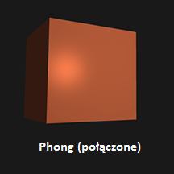

Oświetlenie w prawdziwym świecie jest bardzo skomplikowane i polega na zbyt wielu czynnikach, by idealnie odwzorować je przy skończonej mocy obliczeniowej. Z tego powodu w OpenGL oświetlenie oparte jest o pewne aproksymacje rzeczywistości, które wykorzystują uproszczone modele, łatwiejsze w przetwarzaniu, ale podobne. Modele te oparte są o znaną nam fizykę światła.
Główne bloki budujące tego modelu opierają się o 3 komponenty: światło otaczające (ang. ambient lighting), światło rozproszone (ang. diffuse lighting) oraz światło odbite (ang. specular lighting).
Światło otaczające: nawet jeśli jest ciemno, z reguły gdzieś na świecie jest jakieś źródło światła (księżyc, odległe światło), więc obiekty prawie nigdy nie są całkowicie ciemne/niewidoczne.
By to zasymulować używamy stałego światła otaczającego, które zawsze nadaje obiektom pewien kolor i równomiernie oświetla wszystkie elementy sceny.
Światło rozproszone: symuluje światło padające bezpośrednio na obiekt z jakiegoś określonego kierunku.
Im bardziej dana część obiektu jest wystawiona na źródło światła, tym jaśniejsza się staje.
Można powiedzieć, że to światło padające z danego kierunku i rozpraszane na obiekcie we wszystkich kierunkach.
Światło odbite: symuluje jasną plamę światła, która pojawia się na świecących obiektach. Jest to więc światło z danego kierunku odbijane w tym samym kierunku.
Ten jaskrawy punkt skłania się kolorystycznie bardziej ku kolorowi światła, niż kolorowi obiektu.
Model Phonga łączy te 3 rodzaje światłą w celu stworzenia realistycznego oświetlenia.
 Model Phonga-Blinna jest pewnym rozszerzeniem standardowego modelu Phonga. Jest to podstawowy model oświetlenia w OpenGL.
Modyfikacja polega na innym obliczaniu błyszczących odbić (światła odbitego).
W tym celu najpierw wyliczany jest wektor połówkowy (ang. half-vector), który wskazuje kierunek w połowie drogi pomiędzy kierunkiem światła,
a kierunkiem patrzenia.
Uzyskiwany jest dzięki temu inny kształt błysków, dużo lepszy dla przypadków, gdzie kąt pomiędzy wektorem patrzenia a wektorem odbicia jest większy niż 90 stopni.
Przykład różnicy:
We wczesnych dniach shaderów oświetlenia, deweloperzy implementowali model Phonga w shaderze wierzchołkowym (ang. vertex shader). Nazywane jest to w takim przypadku cieniowaniem Gourada.
Zaletą tego była duża wydajność, ponieważ wierzchołków z reguły jest dużo mniej od fragmentów,
więc obliczenia oświetleniowe były rzadziej wykonywane.
Niestety w tym przypadu wartość koloru w vertex shaderze jest wynikowym kolorem oświetlenia tego jednego danego wierzchołka, a wartości kolorów otaczających fragmentów,
są rezultatem interpolacji.
Dla mniejszej ilości wierzchołków oświetlenie nie wygląda wtedy tak realistycznie (z powodu interpolacji).
Poniżej porównanie:

Jedna z najstarszych metod cieniowania. Cieniuje każdy poligon obiektu na podstawie kąta między normalną powierzchni poligonu i kierunkiem źródła światła, koloru obiektu i intensywności światła.
Nie są używane żadne bardziej skomplikowane algorytmy rozpraszania/odbicia światła. Z tego powodu wszystkie poligony odbijają światło jak płaska powierzchnia, co daje obiektowi "kanciasty" wygląd.
Zaletą jest to, że ponieważ nie ma żadnej matematycznej korekcji, metoda ta wymaga bardzo niewielkich obliczeń.
Poniżej przykład porównania cieniowania płaskiego z metodą Phonga, dla identycznego obiektu:
Lekcja pierwsza umożliwia ustawianie w różnych miejscach sceny świateł różnych rodzajów (spotlight, directional, point).
Możliwe jest również przełączanie trybu oświetlenia, dostępne są model Phonga, Phonga-Blinna, cieniowanie Gourauda i cieniowanie płaskie.
Ponadto każde światło będzie można sparametryzować, ustawiając mu np. kolor i wartości innych cech.